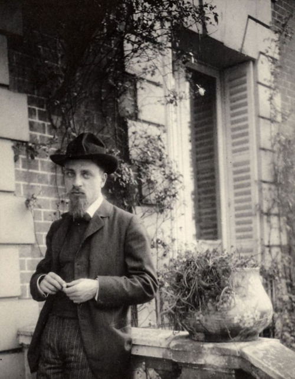

Rilke na starej fotografii
Meudon 1906
Rilke w roku 1906, podczas pobytu u Rodina w Meudon, gdzie pracował jako sekretarz sławnego rzeźbiarza.
Opowiadał o sztuce, marszandach, o swej samotności; wypowiedział wiele pięknych słów, których sens zdołałem raczej przeczuć niż zrozumieć, gdyż często mówił nader niewyraźnie i spiesznie. Wciąż powracał do tematu piękna, które objawia się we wszystkim temu, kto go pragnie i potrafi właściwie zrozumieć, rozprawiał o rzeczach i ich wewnętrznym życiu… Zamilkł na chwilę, po czym odezwał się z cudowną powagą w głosie: Il faut travailler, rien que travailler. Et il faut avoir patience. Trzeba pracować, każdego dnia. I otulić się cierpliwością.
— Rilke w liście do Clary Westhoff
